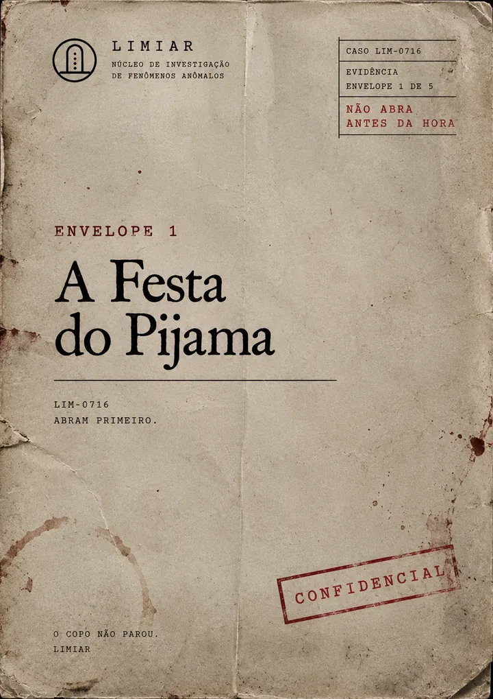
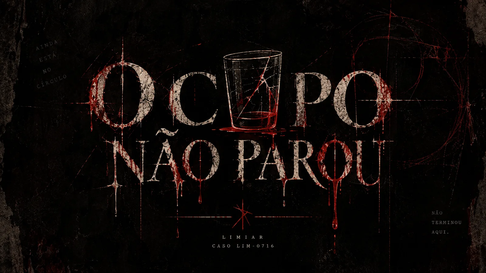
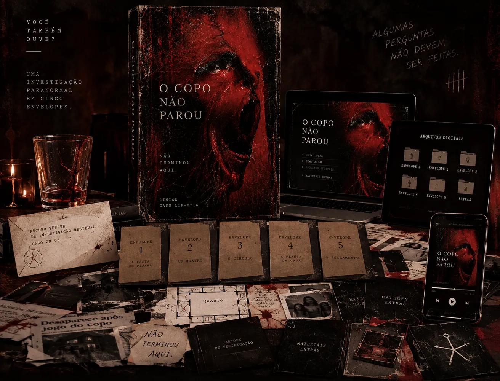
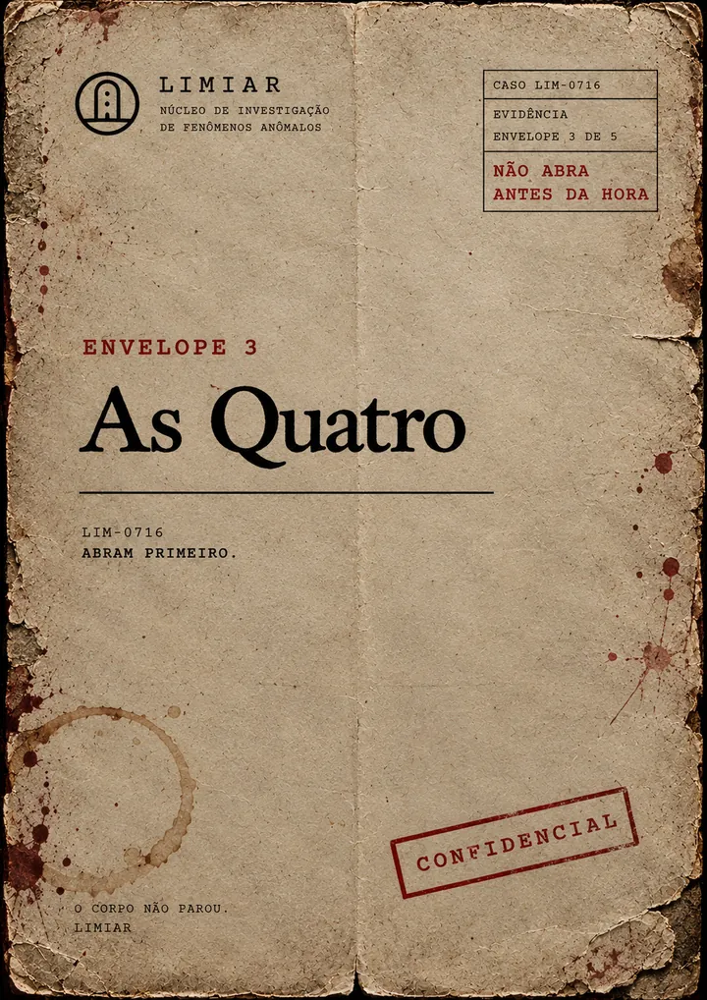
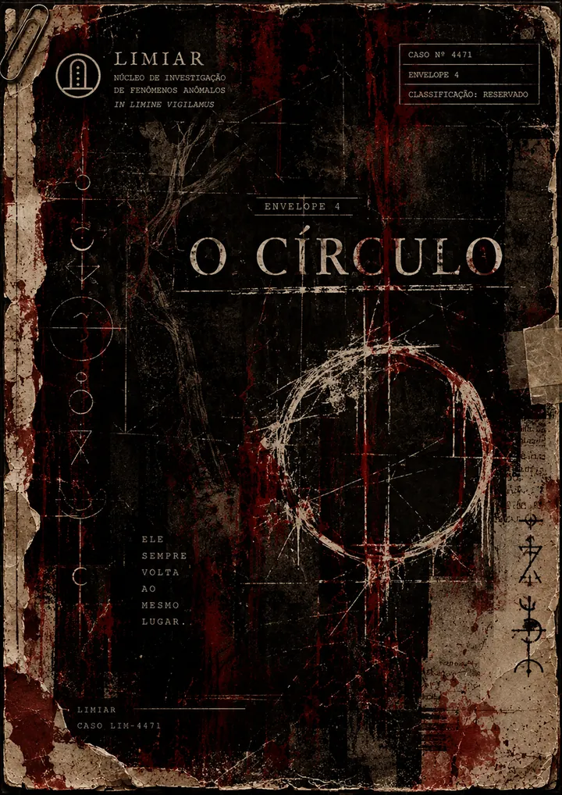
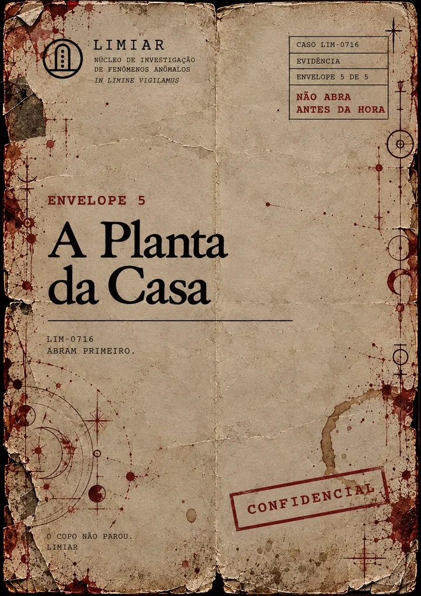
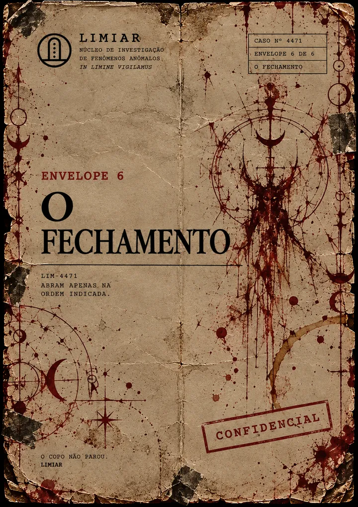

Envelope 1
A Festa do Pijama
A carta de convocação, o protocolo da sessão e os primeiros registros daquela noite.
Tem um lugar vazio no círculo.

Uma investigação paranormal em cinco envelopes.
Apaguem a luz. Acendam cinco velas. Vocês têm uma noite para entender o que aconteceu naquele quarto — e fechar a sessão.
Na madrugada de 16 de julho de 2016, Camila Rocha Vieira, 14 anos, desapareceu dentro da própria casa durante uma festa do pijama. As amigas jogavam o jogo do copo.
A polícia arquivou o caso em 2017. A LIMIAR não. O dossiê reúne depoimentos que não batem entre si, e um tabuleiro que .
Agora ele está com vocês. Ninguém precisa acreditar em nada. Só precisam ler com atenção — e decidir quem vai ocupar o lugar vazio no círculo.
O que vem no kit

Como funciona
O guia de produção diz o que imprimir, em que papel e como montar cada envelope. É o único trabalho antes da noite começar.
Uma pessoa prepara o kit e conhece a solução. Ela não joga: cuida das velas, observa e conduz a noite. Todo o resto do grupo chega sem saber de nada.
Cinco velas no centro. Um lugar vazio marcado no círculo. Áudio ambiente ligado.
O anfitrião entrega o primeiro envelope e diz uma única frase. A partir daí, o grupo segue o protocolo da LIMIAR — ou não.
Cada envelope puxa o fio um pouco mais. Ao fim de cada etapa, uma consulta com a médium. No final, uma decisão que o grupo precisa tomar junto.
Os cinco envelopes
Cada envelope tem seus próprios documentos, e nenhum deles conta a história inteira sozinho.

A carta de convocação, o protocolo da sessão e os primeiros registros daquela noite.

Quatro depoimentos sobre a mesma noite. Cada uma lembra de um jeito. Comparem.

Vídeo da sessão, reconstrução do quarto e registros médicos. As peças começam a se mexer.

Um documento que muda o jeito de olhar para tudo o que vocês já leram.

Tudo se decide aqui. E depois, o silêncio.
Evidências
Boletim de ocorrência, jornal, hospital, celular, rede social, relatório da LIMIAR. Toque para ler. Nada aqui entrega a solução.
Para quem é
Três a seis pessoas ao redor de uma mesa, luz apagada, ninguém olhando o celular. Melhor que um filme: vocês estão dentro dele.
Depoimentos que se contradizem, pistas escondidas em detalhes, teorias discutidas em voz baixa. Raciocínio e clima, não só susto.
Você prepara, acende as velas e assiste ao grupo tropeçar, desconfiar e acertar. É quase tão bom quanto jogar.
Aviso de conteúdo. Ficção com tema sobrenatural, desaparecimento de uma adolescente e manchas de sangue nos documentos. Indicado para maiores de 16 anos.
Antes de comprar
Abra o caso
O Copo Não Parou · Caso LIM-0716
Pagamento único · entrega digital
Dúvidas
Não. O produto é 100% digital: você recebe os arquivos e imprime em casa ou numa gráfica. O guia de produção mostra o papel certo para cada peça e como montar os envelopes.
O jogo foi desenhado para 3 a 6 jogadores, mais um anfitrião que prepara a noite e não joga. Para uma pessoa sozinha, a experiência não funciona como projetada.
Entre 2h e 2h30, com o cronômetro correndo. Reserve também um tempo antes para imprimir e montar o kit.
Não. Tudo o que você precisa saber está no manual. O tabuleiro e o copo fazem parte do kit e entram em cena no momento certo.
É um jogo de atmosfera, dedução e tensão, não de sustos repentinos. Ainda assim, o tema é pesado: sobrenatural, desaparecimento de uma adolescente e sangue nos documentos. Indicado para maiores de 16 anos.
Quem já resolveu o caso não joga outra vez, porque já conhece a solução. Mas você pode reimprimir o kit e ser o anfitrião para outro grupo quantas vezes quiser.
Eles fazem parte dos arquivos do kit e são acionados durante a partida, conforme as instruções do manual.
Sim, elas fazem parte dos materiais que você precisa ter em casa, e são baratas em lojas de papelaria e de eletrônicos. A lista completa está em “O que você vai precisar ter em casa”.
Você tem certeza de que terminou?
Abrir o caso